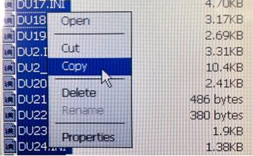

1. Состав исполнителей:
Состав исполнителей на железнодорожных участках:
| Исполнители |
Разряд квалификации не менее |
Количество исполнителей |
| Инженер сервисной организации |
- |
1 |
| Старший электромеханик (Электромеханик) |
- |
1 |
2. Условия производства работ
2.1. Установка программного обеспечения производится поочередно на основном и резервном микропроцессорном блоке БМ-04 КП «Круг» (далее – блок БМ-04).
2.2. Работа производится электротехническим персоналом, имеющим группу по электро безопасности при работе в электроустановках до 1000В не ниже III, перед началом работ проинструктированным в установленном порядке.
2.3. К работе допускается обслуживающий персонал, прошедший специальную подготовку и выдержавший испытания в знаниях условий эксплуатации системы в соответствии с процедурами, принятыми в ОАО «РЖД».
3. Средства защиты, измерений, технологического оснащения; монтажные приспособления, испытательное оборудование, инструменты, техническая документация
Диспетчерская централизация ДЦ «Юг». Руководства пользователя АРМ ДНЦ 36818650.50 5200 002-01 91 01;
Диспетчерская централизация ДЦ «Юг». Руководство по эксплуатации 36818650.39003.001-01 РЭ;
Клавиатура с USB-выходом;
Манипулятор типа «мышь»с USB-выходом;
Внешний носитель с программным обеспечением (флэш-диск).
4. Подготовительные мероприятия
4.1. Подготовить средства технологического оснащения, инструменты и материалы, указанные в разделе 3.
4.2. Убедиться в отсутствии аварийной индикации на блоке БМ-04. При наличии аварийной индикации принять меры к выяснению и устранению причин.
5. Обеспечение безопасности движения поездов
5.1. Установка программного обеспеченияпроизводится в технологическое «окно» с согласия поездного диспетчера (далее – ДНЦ) и электромеханика центрального поста.
5.2. Работа выполняется с оформлением записи в Журнале осмотра путей, стрелочных переводов, устройств сигнализации, централизации и блокировки, связи и контактной сети формы ДУ-46 (далее – Журналосмотра).
5.3. Работа выполняется на основном и резервном блоках БМ-04.
5.4. Установка программного обеспечения выполняется в соответствии с Инструкцией по приёмке в эксплуатацию и сопровождению программного обеспечения устройств и систем железнодорожной автоматики и телемеханики, утвержденной распоряжением ОАО «РЖД» от 23 декабря 2020 г. № 1042/р.
5.5. При выполнении работы обеспечить безопасность движения в соответствии с требованиями Инструкции по обеспечению безопасности движения поездов при технической эксплуатации устройств и систем СЦБ ЦШ-530-11, утвержденной распоряжением ОАО «РЖД» от 20 сентября 2011г. № 2055р.
Примечание. Здесь и далее по тексту целесообразно проверить действие ссылочных документов. Если ссылочный документ заменен (изменен), то при пользовании данной картой технологического процесса следует руководствоваться заменяющим (измененным) документом. Если ссылочный документ отменен без замены, то применяется та часть текста, где не затрагивается ссылка на этот документ.
6. Обеспечение безопасности движения поездов
6.1. При выполнении технологических операций следует руководствоваться требованиями «Инструкции по охране труда для электромеханика и электромонтера устройств сигнализации, централизации и блокировки в ОАО «РЖД» от 03 ноября 2015 № 2616р и «Правилами по охране труда при техническом обслуживании и ремонте устройств сигнализации, централизации и блокировки в ОАО «РЖД» (ПОТ РЖД-4100612-ЦШ-074-2015), утверждёнными распоряжением ОАО «РЖД» от 26 ноября 2015 г. №2765р.
ВНИМАНИЕ. Место работ должно иметь достаточное для их производства освещение. При необходимости следует применять переносные осветительные приборы.
7. Технология выполнения работ
Установка программного обеспечения на блоке БМ-04.
Установка программного обеспечения ПО «КРУГ» в процессе сопровождения производится при обновлении версии базового программного обеспечения КП «Круг», замене микропроцессорных блоков основного или резервного, изменении технологического программного обеспечения в связи с изменением топологии станции и схем увязки с ЭЦ/МПЦ.
ВНИМАНИЕ: Файлы обновленного программного обеспечения (далее – ПО КП) должны быть предварительно подготовлены и записаны на внешний носитель (флэш-диск) в папку «FlashKP».
7.1. Оформить запись в Журнале осмотра.
Пример записи:
В свободное от движения поездов время специалистами сервисной организации будет производиться работа поустановке программного обеспечения на основном и резервном микропроцессорном блоке БМ-04 КП «Круг».
ШНС (ШН)
ДНЦ
7.2. Открыть шкаф, в котором смонтирован блок БМ-04.
7.3. Напередней панели процессорного модуля CPC20006 активного блока БМ-04 в USB-разъем (USB1) подключить клавиатуру, в USB-разъем (USB0) подключитьманипулятор типа «мышь» (Рисунок 1).
Для пояснения, наведитесь на стрелочку
Рисунок 1. Подключение клавиатуры и манипулятора типа «мышь».

Подключение манипулятора типа «мышь»

Подключение клавиатуры
Включение/выключение питания блока БМ-04
7.4. Открыть дисплейную панель БД-03.
7.5. Завершить выполнение работающего программного модуля ПО КП.
7.5.1. Нажать на цифровой клавиатуре клавишу «1» или щелкнуть по кнопке «Разблокировать» в кнопочной панели окна (Рисунок 2).
Рисунок 2. Кнопка «Разблокировать».
7.5.2. В появившемся окне запроса пароля ввести пароль доступа в поле ввода и нажать «Enter».
7.5.3. На панели задач в нижней строке экрана нажать правой кнопкой мыши на пиктограмме выполняющегося модуля «ДЦ ЮГ. Участок НАЗВАНИЕ_УЧАСТКА» (Рисунок 3).
Для пояснения, наведитесь на стрелочку
Рисунок 3. Пиктограмма и опция «Close».
Опция «Close»
Пиктограмма выполняющегося модуля «ДЦ ЮГ. Участок НАЗВАНИЕ_УЧАСТКА»
7.5.4. В контекстном меню выбрать опцию «Close» (Рисунок 3), в окне запроса на вопрос «Завершить программу?» нажать кнопку «Yes».
ВНИМАНИЕ: Выполнение программного модуля ПО КП должно корректно завершиться.
7.6. Отключить клавиатуру, вынув ее кабель из USB-разъема (USB1).
7.7. Запустить на КП приложение «WindowsExplorer», выполнив поочередно следующие действия «Start -> Programm -> WindowsExplorer» (Рисунок 4).
Рисунок 4. Запуск приложения «WindowsExplorer».
7.8. На передней панели процессорного модуля CPC20006 активного блока БМ-04 в USB-разъем (USB1) подключить внешний носитель с обновленной версией программного обеспечения (флэш-диск).
ВНИМАНИЕ: В корневом каталоге приложения «WindowsExplorer» внешний носитель с обновленной версией программного обеспечения (флэш-диск) идентифицируется как папка «HardDisk».
7.9. В корневом каталоге приложения «WindowsExplorer» должен появиться папка «HardDisk» (Рисунок 5).
Для пояснения, наведитесь на стрелочку
Рисунок 5. Папка «HardDisk» и «NAND_Flash».
Папка «NAND_Flash»
Папка «Hard Disk»
7.10. Открыть папку «NAND_Flash», создать вложенную папку «Backup_ГГГГММДД», где ГГГГММДД – дата обновления в формате год, месяц, число.
7.11. Сделать копию применяемой версии программного обеспечения, переместив ее из папки «NAND_Flash» в папку бэкапа. Для этого необходимом выделить все файлы, щелкнуть по выделению правой кнопкой мыши, в контекстном меню выбрать опцию «Copy» (Рисунок 6), щелкнуть правой кнопкой на папке бэкапа и в контекстном меню выбрать опцию «Paste». Дождаться завершения процесса копирования.

Рисунок 6. Процесс копирования файлов.
7.12. Выйти в корневой каталог приложения «WindowsExplorer», открыть поочередно папки «HardDisk -> FlashKP».
7.13. Выделить для копирования все подготовленные файлы обновленной версии программного обеспечения, щелкнуть на выделении правой кнопкой мыши, выбрать опцию «Copy».
7.14. Перейти в корневой каталог «WindowsExplorer», открыть папку «NAND_Flash».
7.15. Щелкнуть в папке правой кнопкой мыши, в контекстном меню выбрать опцию «Paste», подтвердить запрос о перезаписи файлов, дождаться завершения копирования.
7.16. Отключить манипулятор типа «мышь», вынув ее кабель из USB-разъема (USB0).
7.17. Отключить внешний носитель (флэш-диск), вынув его из USB-разъема (USB1).
7.18. Выключить питание активного блока БМ-04 (Рисунок 1).
7.19. Включить питание активного блока БМ-04 (Рисунок 1).
7.20. Дождаться запуска программы, проверить правильность отображения состояния связи (работу модемов) по индикации.
7.21. Провести переключение активности с основного блока БМ-04 на резервный согласно ТНК ЦШ 0172-2015.
ВНИМАНИЕ: Переключение на резервный блок выполняется с помощью кнопки «Резерв» на панели БМ-04.
7.22. Выполнить установку программного обеспечения на резервном блоке БМ-04 в соответствии с пунктами 7.2-7.20.
7.23. Оформить запись в Журнале осмотра.
Пример записи:
Работа по установке программного обеспечения на основном и резервном микропроцессорном блоке БМ-04 КП «Круг» завершена. Устройства проверены, работают нормально.
ШНС (ШН)
ДНЦ
8. Заключительные мероприятия, оформление результатов работы
После окончания установки программного обеспечения оповестить ДНЦ и электромеханика центрального поста об окончании работы, сделать запись в журналеШУ-2 о проведенной работе и внести результаты выполнения работы в систему ЕК АСУИ в соответствии с требованиями, изложенными в разделе 4 «Порядка планирования, учета и контроля выполнения работ в хозяйстве автоматики и телемеханики», утверждённого распоряжением ОАО «РЖД»от 13 января 2020 г. №20/р.
Результаты работы по сопровождению программного обеспечения специализированная организация оформляет в журнале учета выполненных работ по техническому обслуживанию и ремонту устройств и систем ЖАТ по форме, представленной в регламенте взаимодействия между участниками процесса технического обслуживания и ремонта систем и устройств железнодорожной автоматики и телемеханики ОАО «РЖД», осуществляемых специализированными организациями, утвержденном распоряжением ОАО «РЖД» от 30 декабря 2017 г. № 2827р.
Начальник отдела ПКБ И
Конструктор 1 категории ПКБ И
Е.Н. Иванов
В.В. Харламов